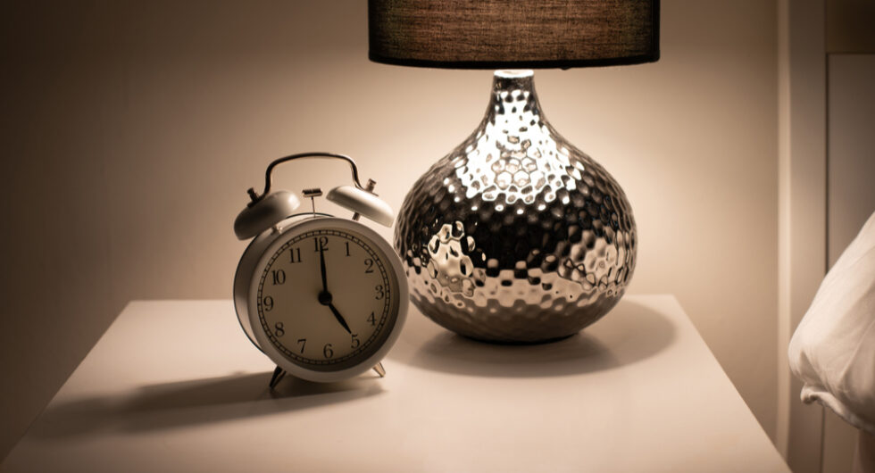

5 Reasons Why Waking Up At 5 AM Everyday Is Healthy For You
Quizzes·1 min read"
Wait, don’t feel challenged, waking up at 5 am sounds difficult, but we will tell you the
benefits behind this and that would really help you to get up early in the morning.
Some people consider themselves night owls for life; however, feeling more active at
night results from lifelong habits. The same can be said for becoming a morning
person by waking up at 5 a.m.
Getting up at 5 AM isn’t just for entrepreneurs who plan on working 16 hours a day.
Everyone can benefit from waking up early, regardless of their lifestyle. If you’re
trying to be more productive, reduce distractions, or sleep better at night, getting
up at 5 AM will help you.
Here are seven reasons to start getting up at 5 AM and five ways to make it fun and productive.
1. You will develop self-discipline
Approximately one year ago, I began going to the gym every morning, and I discovered my greatest reward was self-discipline rather than physical improvements. Getting stuff done at 5 AM may not be necessary every day, but doing so allows you to start the day off right and be disciplined.
You’ll probably have many sleep problems the first two weeks if you get up at 5 AM. You won’t feel like getting up. As a result, your self-discipline will improve, and once you’re up, you’ll feel more motivated to get the work done since you forced yourself to wake up so early
2. It’ll make you sleep better
Are you aware that waking up earlier gets you better sleep? You won’t believe it, but it’s
true! Your body craves sleep at the right time when you get up early because it uses up
its energy the way it was supposed to.
Getting up early has psychological benefits too. As a result of waking up earlier, you have
a clearer conscience and feel better about yourself because you’ve accomplished something.
Reduced stress and anxiety levels lead to better positive thinking, which means you can fall
asleep easier. It’s like feeling like you’ve earned your sleep.
Obviously, you have to pay attention to other things too, like:
Timeframe:
Make sure you’re getting 7 hours of sleep every night. If you tend to be more active during the day, or don’t feel refreshed after 7 hours, keep sleeping up to a maximum of 10 hours a day. It’s important to get enough sleep for a good day.
Refreshers:
Obviously, you need to pay attention to other factors that affect your sleep as well. If you drink coffee, eat sugar, or stuff your face right before bedtime, you’re going to feel wide awake! Don’t eat anything too close to bedtime, but go for relaxing, non-stimulating food if you have to.
The Routine:
Sleeping with a routine can help you wind down at night. You won’t sleep if you play loud music, run around the house, or exercise within three hours of bedtime.
Gadgets:
Computers, phones, and TVs can expose your eyes to a lot of light, affecting your brain’s melatonin production. Melatonin is the hormone that regulates sleep. Put your devices away an hour before bed (and put your phone on airplane mode).
3. You’ll have more time to yourself
It’s a great time to concentrate on yourself without distractions at 5 AM. Waking up at 5 AM isn’t just a way to get more work done; it’s also a way to boost your self-care. I recommend working out, strategizing your day, meditating, or doing self-care during this time. As no one else is awake at this time, you’ll be able to concentrate on just one thing without any distractions or overwhelming demands. You can drink your tea and read a book in peace or work without interruption on a project that needs completing. I think it might be easier to get a slot in the morning than in the evening. Take advantage of the moments you have at 5 AM and go for a walk, read the paper, or watch the sunrise. Breathe for a minute and relax.
4. Make sure you’re ready
Get up earlier in the morning, so you’re ready for the day. Perhaps your babysitter calls you sick. Taking this time will give you the chance to resolve this issue before it gets out of hand. Is there a bill due today? The sooner you get up, the better prepared you are for it and the more work you can accomplish. Making preparations for the day ahead by choosing your clothes, eating a good breakfast, and filling up your automobile can better prepare you for any issues.
5. There’s a chance you’ll make more money
It may seem funny, but it’s true. Get more sleep, get up earlier, learn more, build confidence, and cut out low-level “dopamine” junk, and you’ll make more money. It’s fine to make more money. If you’re making more money, you’ll have a bigger future. “The bigger your future, the better your present,” says Dan Sullivan. Your present will be better since you’ll be working toward something that matters to you. Your goal will be big and important. I’m sure you care about the world in general, individual people, and want to improve their lives. You’ll make more money and lead a better lifestyle. However, your main motivation is to do more good in the world with your money. Recently, I bought a car for a family in my church. They’ve been through a lot lately, but they’re an amazing family. It’s great to be able to purchase a used car for them. It wasn’t a bunch of cash. It was something I could do. It’s something I wanted to do. I want to do more of that.
Last Thoughts On Some Reasons Why Waking At 5 AM Is Good For You
It’s hard to change your sleep schedule. Yet, with the possibility of so many benefits, it isn’t impossible to be motivated to make this work. Do you have trouble waking up early? I’m sure most people would! Slowly move your waking times back by 30-60 minutes until you’re at 5 in the morning. If it doesn’t work for you, you just need to get up earlier, at any time before your usual waking time. You can trust us. You won’t be disappointed with the results!